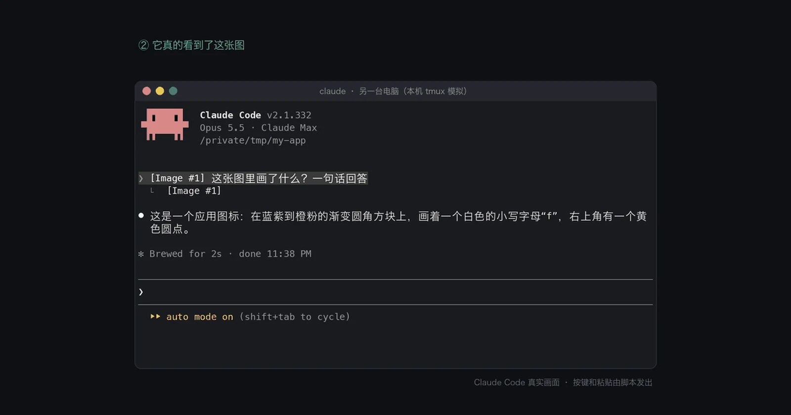

Fibo 是怎么做出来的：在多台电脑上跑 Coding Agent 时碰到的问题、实测的数字，以及我们的取舍。

工程实践 · 2026 年 11 月
Claude Code 读的是它自己那台电脑的剪贴板。实测 20 种粘贴写法后发现：一个单独的图片绝对路径就是一个附件。Fibo 先把图存到那台电脑，再只贴路径。
技术架构 · 2026 年 11 月
另一台电脑上的终端，像本机一样开标签、分屏、打字：架构选型、边界隔离、视图解耦，以及 54 KB/s 慢链路上从 3.59 MB 到 660 字节的增量协议设计。